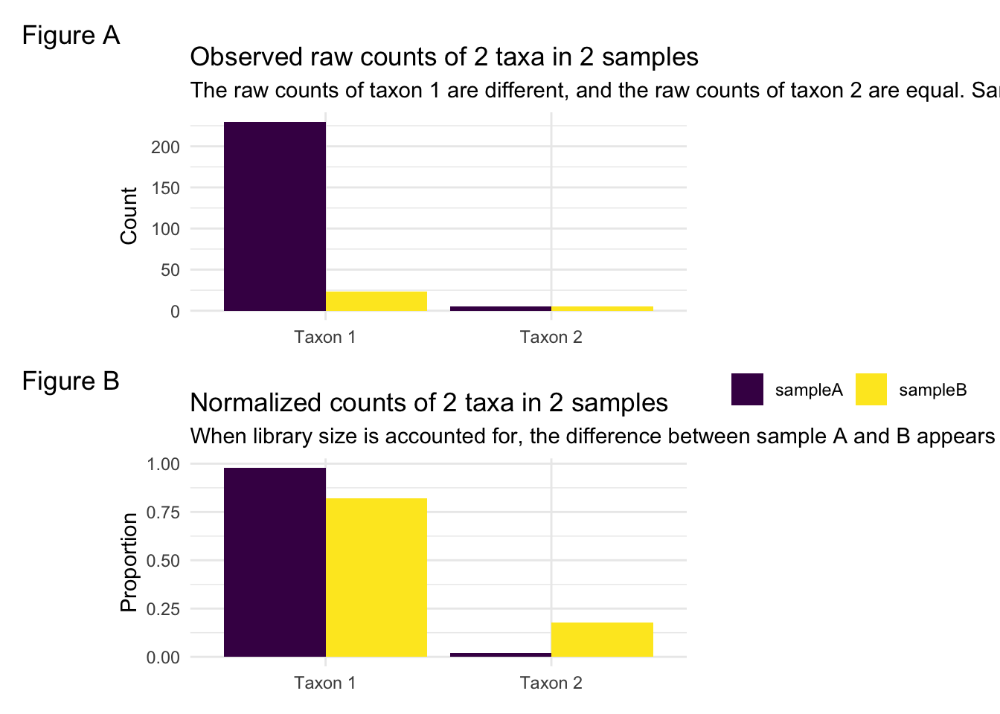
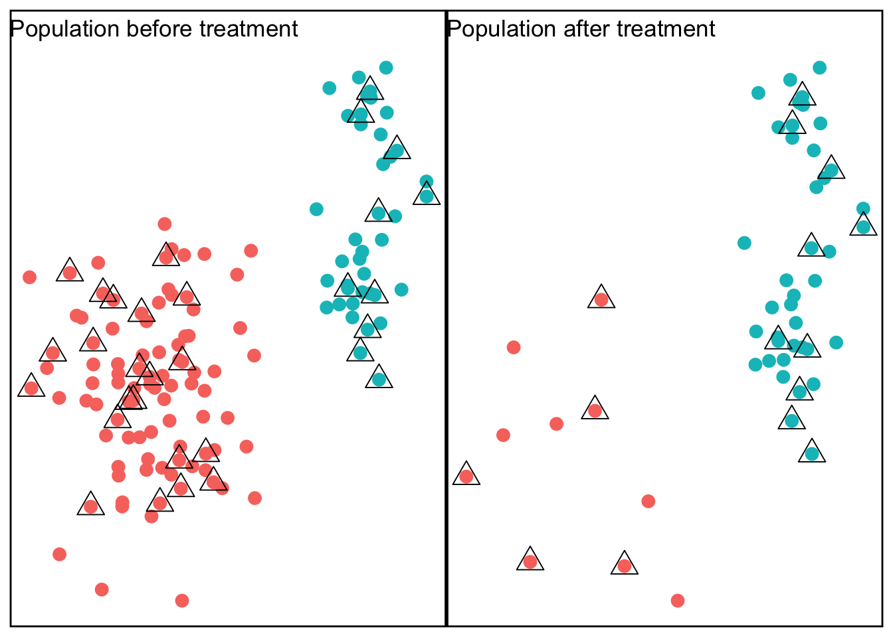

Tutorial on Microbiome Normalization
2021-08-17
Chapter 1 Introduction
1.1 The importance of normalization
Microbiome data must be normalized before any analysis can be performed. Following the process of sequencing and assigning raw reads into counts per observed and classified identified taxa classes/OTUs/ASVs, the data are in the form of a matrix of read counts. Normalization is the process of transforming raw read count data into data that can be compared between samples. Statistical analysis on this count matrix is then performed depending on the goal of the experiment. Common analysis goals include community-level analysis (alpha/beta diversity), differential abundance testing (the parallel of differential expression testing in gene expression studies), and network analysis.
Analysis of composition, differences, connections, etc. should be done based only on true biological aspects. However, technical variation in counts across samples is a given hurdle that must be accounted for. Biases can arise in the sequencing process, sample preparation, contamination, preferential amplification, and can manifest in differences in sparsity and unequal sequencing depths (Salter et al. 2014). An effective normalization strategy should put all samples on equal footing so interpretations are on biological signals, not technical signals such as sequencing depth. Currently, there is no known ‘best’ normalization method that removes all technical artifacts leaving only biological signals.
Due to the sequencing technology, samples will have different sequencing depths, or the sum of all the counts in a sample. Directly comparing raw counts between samples is not possible. To illustrate this, consider the counts of one taxon, labeled ASV1, across two samples shown below. In Sample A, this taxon has a count of 230, and in Sample B, this taxon has a count of 23. Is this taxon differentially abundant between samples?
##
## Attaching package: 'gridExtra'## The following object is masked from 'package:Biobase':
##
## combine## The following object is masked from 'package:BiocGenerics':
##
## combine## The following object is masked from 'package:dplyr':
##
## combine
Normalization for microbiome data often refers to standardizing sequencing depth across samples. One common approach to this is a scaling-based approach, where a scaling factor is calculated for every sample and the counts for each taxon are divided by the scaling factor for that sample. Figure B shows the same data as figure A, but where each sample has been transformed into proportions by dividing by the total counts for each sample. The difference in ASV1 between samples appears much smaller. However, now there appears to be a difference in ASV2, even though the counts were originally the same. This is because in sample B ASV1 consists of a higher proportion of the total count than in sample A.
This demonstrates the importance of normalization, but also the artifacts that can occur depending on the method.
1.2 The compositional nature of microbiome data
Microbiome data are inherently compositional. The counts of the collection of taxa that make up each sample are constrained by the total sum, or sequencing depth for that sample. This means that the count of each sampled taxon is a portion of a larger whole. Each observed taxon is not independent. As we saw in the above example, before normalization, ASV2 was equal between samples. After converting to proportions, ASV2 no longer appears equal. If there is a difference between two samples it is unclear if that difference is because of a true difference on that taxon or that taxon is changing because of differences in another taxon.
Numerous traditional statistical methods rely on an independence assumption, which is not met with microbiome data. This can lead to spurious correlations that exist only because of the compositional nature and not any true signal.
With library size as the sum constraint for each sample, if we know in a biological system that after an event occurs (treatment), ASV1 decreases, this will change the composition of the sampled ASV2 regardless of its change or lack thereof in the underlying population.

Consider again two samples consisting of red and blue points. We can think of the samples as before and after treatment. In the second plot, the number of blue dots in the population and in the observed sample has decreased, but the red remains the same.
| Sample | blue | red |
|---|---|---|
| Before | 20 | 10 |
| After | 4 | 10 |
| Sample | blue | red |
|---|---|---|
| Before | 0.6666667 | 0.2857143 |
| After | 0.3333333 | 0.7142857 |
This observed increase in red is due to the compositional nature of the sampled points, and not any true difference in the red population.
1.2.1 Log ratio
The methodology developed by Aitchison in the 1980s is useful for analyzing compositional data. The theory developed there, however, is for data with different characteristics than microbiome data.
Microbiome data is high dimensional, and.
Taking the logarithm of ratios can be an appropriate transformation for compositional data, so standard statistical tests can be appropriate again. This transformation removes the issue of standardizing/normalizing different library sizes. The library size for a given sample will not distort the biological covariance or correlation structure.
This log-ratio method has a drawback, which is the decision of how to define the denominator. Two approaches to this problem can be to use one sample as the reference. This sample should be ‘representative’. The log-ratio transformation is then the ratio of every other taxon to that representative sample. Of course, knowledge of what makes a sample representative is hard to come by and often unknown, and subsequent results can be affected by this choice. This method is frequently called the additive log-ratio approach (alr). The alternative method is using the data to create a pseudo-reference sample. This pseudo-reference sample is the geometric mean of the counts of all taxa. This is called the centered log-ratio method.
While promising, these log-ratio methods have drawbacks in current metagenomic literature. Microbiome data are often incredibly sparse, with up to 80-90% of count matrices containing zero counts. For ratio transformations, if we have sparse data, the geometric mean can be zero. Then the ratio is undefined, and further, so is the log.
One solution to this is adding a small pseudo count to every element in the data. This removes problems occurring from having zero counts in the data, but there is not a clear best choice of what pseudo count to use, and it the choice can impact downstream results.
1.3 Zero-inflation of microbiome data
Include section on considerations that are necessary to account for zero-inflation.
References
Salter, Susannah J., Michael J. Cox, Elena M. Turek, Szymon T. Calus, William O. Cookson, Miriam F. Moffatt, Paul Turner, Julian Parkhill, Nicholas J. Loman, and Alan W. Walker. 2014. “Reagent and Laboratory Contamination Can Critically Impact Sequence-Based Microbiome Analyses.” BMC Biology 12 (1): 87. https://doi.org/10.1186/s12915-014-0087-z.